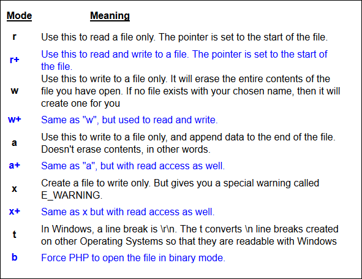

PHP fopen options
In the code from the previous page, we used fopen and to get at our file. But we were only reading the file. That's was why we had the letter "r" in the round brackets of fopen:
$file_handle = fopen("dictionary.txt", "r");
But there are other options. Here's a fuller list of things you can replace "r" with.

So if you wanted to read and write to the file, you'd use this:
$file_handle = fopen("dictionary.txt", "r+");
Or this, if you want to append data to the end of file when you're writing it back:
$file_handle = fopen("dictionary.txt", "a+");
If you need to work with binary files (like images), then you can add the "b":
$file_handle = fopen("dictionary.txt", "rb");
Checking if the file exists
It's a good idea to check if the file exists, before trying to do something with it. The file_exists( ) function can be used for this:
if ( file_exists( "dictionary2.txt" ) ) {
print "file exists";
}
else {
print "file doesn't exist";
}
In between the round brackets of file_exists( ) you then type name of your file. If it does exist, then you can go ahead and do something with it; if not, you can write code to handle any errors.
In the next part, we'll see how to write to a file with PHP.